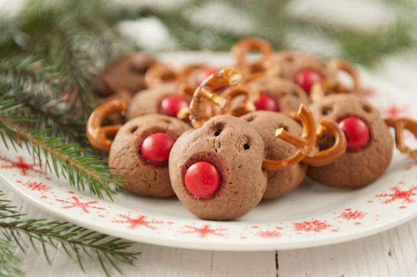

Sandra’s favorite christmas cookies
Simple, but delicious Nutella Cookies
For those very simple Nutella cookies you only need three ingredients.
Preparation
- For those easy and fast to do Nutella cookies put the flour in a bowl.
- Add the Nutella and the egg and mix everything to a tight dough.
- Pull little pieces from the dough and form small balls. Put them an a baking tray, covered with baking paper and press them smoothly flat with your hands.If you prefer to make them look like Rudy on our picture, make sure to form little reindeer heads instead of circles!
- Put red Smarties in the lower middle of the head, to become Rudy's nose. Use a needle or a stick to sting little holes for the eyes and form two holes for deer head on both sides. You will add them later on.
- Bake the cookies for 10 minutes at 175° in the pre-heated oven.
- Brake some little pretzels into pieces and put them into the holes you made before.
- Have fun eating and enjoy!